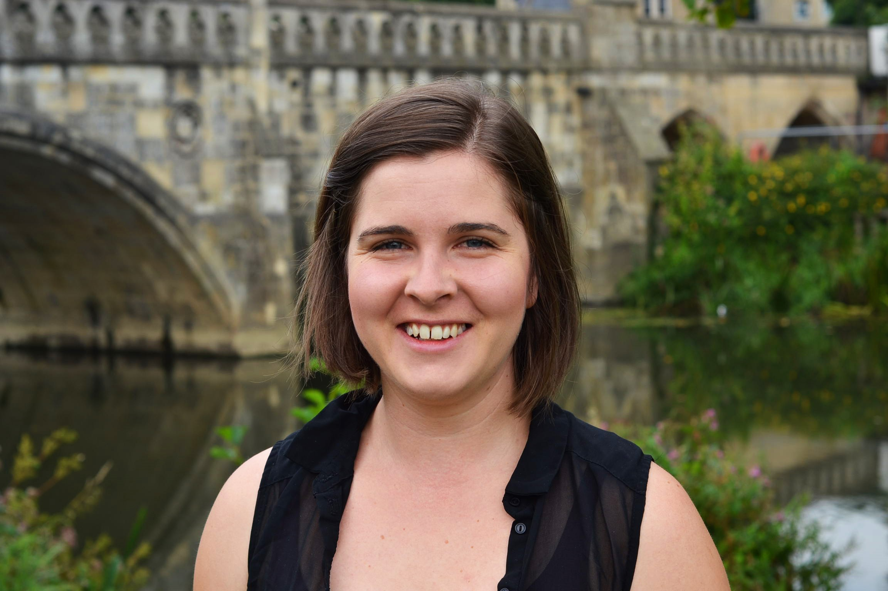

Beth Williams
MEng (Hons), CEng MICE

About Me My Hobbies
Accreditations
Chartered Engineer
Institution of Civil Engineers (ICE)
Issued December 2019
Certified PassivHaus Designer
Passive House Institute
Issued December 2015
Experience
Build Collective
Associate
January 2021 to present
Projects include:
- Certified PassivHaus and EnerPHit projects across the UK.
- Bespoke private houses across the UK, including RIBA Award winning designs.
- Conversion and conservation of historic buildings, including Garde I and II Listed structures.
- Alterations and extensions to schools and academies in England and Wales.
- Unusual and unique strucutres, such as art installations, staircases, and temporary festival structures.
Build Collective
Structural Engineer and Certified PassivHaus Designer
January 2015 to 2021
Astam
Graduate Structural Engineer
February 2014 to November 2014
Projects include:
- Sports Hall and Dance Studio, Cirencester College.
- New Cafe, Royal Agricultural University, Cirencester.
- Dining Hall, Brymore College, Bridgewater.
- Bars and Cafe Developments, Loungers Group
RockUK Activity Centres
Instructor
October 2012 to Devember 2013
Responsibilities included:
- Instruction of the following activites:
- Archery (GNAS)
- Canoeing and Kayaking (UKCC Level 1)
- Climbing and Bouldering
- Fencing
- Initiative Games and Team-building Activites
- Saftey checks and maintenance of activity equipment.
- Design and marketing work to promote the centre and it's activity offering.
Hooley Tratt Partnership
Architectural Assistant
July 2011 to August 2012
Projects include:
- Training and accommodation buildings at secure units for Nottingham NHS Mental Health Trust.
- Alterations and renovation of historic industrial buildings in the city.
- Design and construction management of new build homes in the Peak District National Park.
- Domestic alterations and extensions up to £200k, including contracts, construction drawings and planning applications.
Education
The University of Sheffield
MEng (Hons) Structural Engineering and Architecture
Grade 2.1
Dissertation
Effects and Modelling of Full-height, Non-Structural Partitions When Checking Floor Vibration Serviceability
Contact Me